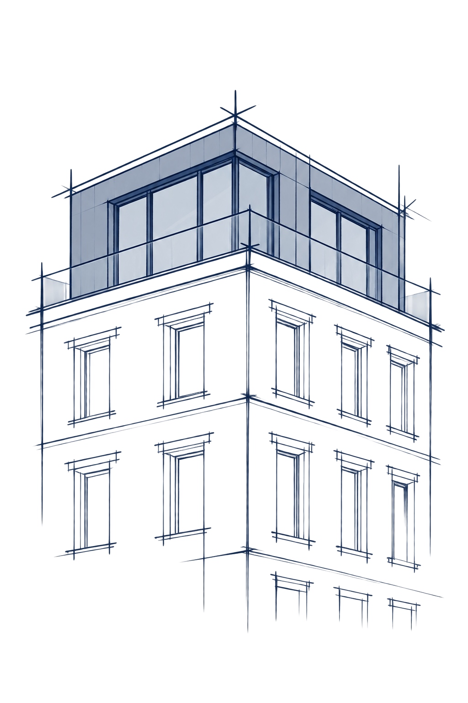

Ungenutztes Potenzial Ihrer Immobilie erkennen.
Elbhaus prüft Grundstücke und Bestandsimmobilien in Hamburg auf zusätzliche Bebauungsmöglichkeiten, Nachverdichtung und Aufstockung – von der ersten Potenzialanalyse bis zur Projektentwicklung.
Objekt prüfen lassenFür Grundstückseigentümer · Bestandshalter · Investoren

Was ist auf meinem Grundstück tatsächlich möglich?
Viele Grundstücke und Bestandsgebäude verfügen über Entwicklungspotenziale. Nachverdichtung oder Aufstockung können neue Wohnfläche schaffen und den wirtschaftlichen Wert einer Immobilie verändern.
Elbhaus untersucht diese Potenziale im Hinblick auf Ihre Ziele. Unsere Machbarkeitsstudie prüft mögliche Flächen, Planungsrecht, bauliche Voraussetzungen, Kosten und Wirtschaftlichkeit und liefert eine fundierte Empfehlung für die nächsten Schritte.
Gerade vor einem Verkauf kann es sinnvoll sein, zusätzliche Bebauungsmöglichkeiten zu klären und Baurecht zu schaffen oder abzusichern. Ein belastbar dargestelltes Entwicklungspotenzial kann den Grundstückswert, den erzielbaren Kaufpreis und damit Ihren Verkaufsertrag erhöhen.
Wo könnte auf Ihrer Immobilie Potenzial liegen?
Immobilientyp auswählen.
Der Potenzialfinder wird geladen. Alternativ können Sie Ihr Objekt direkt über das Kontaktformular prüfen lassen.
Unser Weg zum Projekterfolg.
Projektentwicklung verbindet die einzelnen Leistungen zu einem gemeinsamen Weg. Wir konkretisieren tragfähige Varianten, strukturieren die weiteren Planungsschritte und begleiten Abstimmungen sowie die Umsetzung mit den erforderlichen Fachplanern und Partnern.
Sie können Elbhaus mit der Entwicklung Ihres eigenen Grundstücks beauftragen. Ziele, Leistungsumfang und die Form der Zusammenarbeit legen wir gemeinsam fest.
Mehr zur ProjektentwicklungPotenzial erkennen
Grundstück und Bestand
Machbarkeit prüfen
Baurecht und Wirtschaftlichkeit
Planung konkretisieren
Planung und Genehmigung
Projekt realisieren
Umsetzung begleiten
Unsere Leistungen


Entwicklungspotenzial vor dem Verkauf sichtbar machen.
Zusätzliche Bebauungsmöglichkeiten sollten möglichst vor einem Verkauf geprüft werden. Solange Entwicklungspotenzial nur vermutet wird, lässt es sich im Kaufpreis oft nicht vollständig berücksichtigen.
Eine planungsrechtliche und wirtschaftliche Prüfung zeigt mögliche Flächen und realistische Entwicklungswege. Werden diese konkretisiert und das Baurecht geschaffen oder abgesichert, können Grundstückswert und erzielbarer Verkaufspreis deutlich steigen.
Elbhaus begleitet Sie von der Potenzialanalyse bis zur Vorbereitung der Planung und Genehmigung. So wird der mögliche Mehrwert im Verkaufsprozess nachvollziehbar und verhandelbar.
Entwicklung vor Verkauf vorbereitenTypische Situationen mit Entwicklungspotenzial.
Fiktive Szenarien: Wie zusätzliche Fläche oder gesichertes Baurecht den Wert einer Immobilie verändern können.
Baurecht vor dem Verkauf
Zusätzliches Baurecht sichern
1.200 m² Grundstück · 200 m² Bestand · ca. 200 m² zusätzliches Baurecht
- Vorher
- 1.000.000 €
- Nachher
- 1.300.000 €
Brutto-Differenz vor Investitionskosten+300.000 €+30 % brutto gegenüber dem Ausgangswert
Nachverdichtung
Zusätzlichen Baukörper realisieren
1.200 m² Grundstück · zweiter Baukörper mit ca. 250 m² zusätzlicher Wohnfläche
- Vorher
- 1.000.000 €
- Nachher
- 1.800.000 €
Brutto-Differenz vor Investitionskosten+800.000 €+80 % brutto gegenüber dem Ausgangswert
Dachgeschossausbau
Neue Wohnfläche im Bestand schaffen
600 → 750 m² Wohnfläche · 8 → 10 Wohneinheiten
- Vorher
- 2.000.000 €
- Nachher
- 2.500.000 €
Brutto-Differenz vor Investitionskosten+500.000 €+25 % brutto gegenüber dem Ausgangswert
Keine Gewinnprognose: Fiktive, vereinfachte Rechenbeispiele mit gerundeten Orientierungswerten. Bau-, Planungs-, Genehmigungs-, Finanzierungs-, Steuer- und sonstige Kosten sind in den Differenzbeträgen nicht berücksichtigt. Die tatsächliche Wirtschaftlichkeit hängt vom Objekt, dem erreichbaren Baurecht, der Umsetzung und der Marktsituation ab. Orientierungsrahmen: Immobilienmarktbericht Hamburg 2026, Gutachterausschuss für Grundstückswerte.
Unser Anspruch
Elbhaus verbindet planerische Fachkenntnis mit wirtschaftlicher Analyse. Wir betrachten Ihr Grundstück im Zusammenhang mit Ihren Zielen, den baulichen Voraussetzungen und einer langfristig tragfähigen Entwicklung.
Transparente Annahmen, eine nachvollziehbare Bewertung und klare nächste Schritte bilden die Grundlage unserer Zusammenarbeit.
Ihr Ansprechpartner und Geschäftsführer
Torben Schattling
Als studierter Stadtplaner (M.Sc.) und Absolvent der Öffentlichen Verwaltung (M.A.) verbindet er planerische Fachkompetenz mit verwaltungswissenschaftlicher Perspektive. Berufliche Stationen umfassen Tätigkeiten im Stadtplanungsbüro, die Hochbauprojektleitung sowie Leitungsfunktionen in der öffentlichen Verwaltung. Seit 2025 arbeitet er an einer Promotion in den Wirtschaftswissenschaften.
Im persönlichen Austausch besprechen Sie die Ziele für Ihr Objekt und den passenden Einstieg in die weitere Prüfung.
Porträtfoto
Das Wichtigste vor der ersten Prüfung.
Kurze Antworten zu Ablauf, Unterlagen und weiteren Entwicklungsschritten.
Wie beginnt die Prüfung meines Grundstücks?
Im ersten Austausch besprechen wir die Objektadresse, Ihre Ziele und die vorhandene Bebauung. Anschließend legen wir fest, welche Fragen vertieft geprüft werden sollen und welcher Leistungsumfang sinnvoll ist.
Welche Unterlagen werden zunächst benötigt?
Für die erste Kontaktaufnahme genügt die Objektadresse mit einer kurzen Beschreibung. Lageplan, Grundrisse, Flächenangaben oder frühere Genehmigungen helfen bei der weiteren Prüfung, sind für den Erstkontakt aber keine Voraussetzung.
Was untersucht eine Machbarkeitsstudie?
Sie betrachtet insbesondere Planungsrecht, erreichbare Flächen, bauliche Voraussetzungen, Kostenrahmen und Wirtschaftlichkeit. Daraus entsteht eine nachvollziehbare Grundlage für die nächsten Entscheidungen.
Wie lange dauert die Bearbeitung?
Für eine Machbarkeitsstudie beträgt die Bearbeitungszeit in der Regel 10 bis 15 Werktage, sobald Aufgabenstellung und erforderliche Unterlagen vorliegen.
Muss ich meine Immobilie verkaufen wollen?
Nein. Eine Entwicklung kann zusätzliche Wohnfläche, langfristige Erträge oder eine bessere Nutzung des eigenen Grundstücks zum Ziel haben. Vor einem möglichen Verkauf kann die vorherige Klärung von Baurecht ebenfalls sinnvoll sein.
Begleitet Elbhaus auch die weitere Umsetzung?
Ja. Auf Grundlage der Potenzialprüfung kann Elbhaus die weitere Projektentwicklung begleiten – von der Konkretisierung über Planung und Genehmigung bis zur Vorbereitung und Begleitung der Realisierung.
Sie möchten wissen, welches Potenzial Ihre Immobilie hat?
Senden Sie uns die Adresse des Objekts und eine kurze Beschreibung. Wir melden uns persönlich bei Ihnen.
Im ersten Gespräch klären wir Ihre Ziele und die nächsten Schritte. Umfang und Vergütung einer vertieften Prüfung vereinbaren wir vor Beginn.
Elbhaus Projektentwicklung GmbH
Barmbeker Str. 142
22299 Hamburg